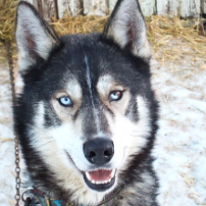
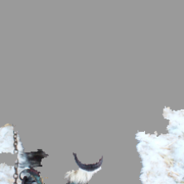
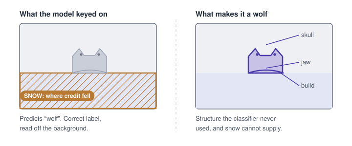
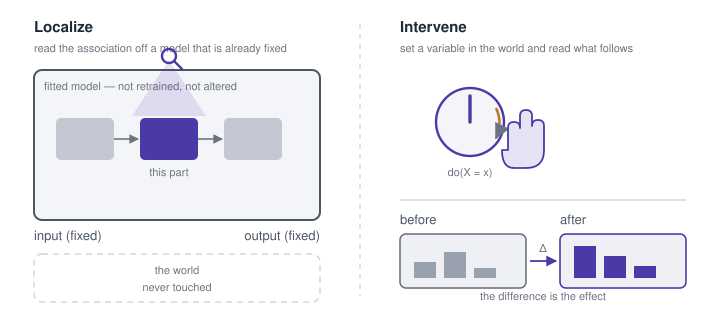
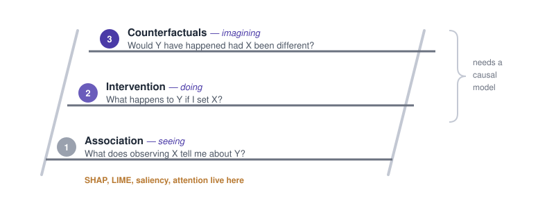

The snow explained the prediction; it never made the animal a wolf
You fit a model, run SHAP, stare at the bar chart. Tenure has the longest bar. Somebody says: so tenure is what’s causing churn — let’s go extend tenure. Reasonable sentence. It does not follow from anything on the screen.
The cleanest demonstration is a decade old, and it was rigged on purpose. Ribeiro and colleagues wanted to know whether an explanation would expose a model that was right for the wrong reason, so they built one: a husky-versus-wolf classifier trained on 20 images hand-picked so every wolf had snow behind it and no husky did. Asked which pixels it used, the model said snow — accurate, and nonsense as a causal claim. Snow does not make an animal a wolf.


Reproduced from Ribeiro, Singh & Guestrin (2016), Figure 11, for commentary. Shown only predictions, 10 of 27 graduate students trusted this classifier; shown the explanation, 3 did, and those naming snow as its evidence rose from 12 to 25.

Both fields use the same words — why, because, important, counterfactual — and mean something different by each.
Explainability localizes: which part of a fixed model moved this output
Attribution answers a question about an input-output association: given this model and this input, which parts account for the output? Saliency localizes to pixels, SHAP and LIME to features, attention to tokens — different notions of a part, one operation.
The scope is narrower than the language suggests: one model, one instance, one prediction. The model is already fitted and stays that way, so what comes back is a property of a correlation it learned — which may be a real mechanism, an artifact of collection, or snow. The chart cannot tell you which, because the procedure never consults the world.

Causality intervenes: change something and watch what follows
Consulting the world is what the other tradition does. A causal claim is bought by intervening — setting a variable rather than observing it — and watching what moves. A randomized trial, an A/B test, a natural experiment standing in when neither can be run.
Pearl’s ladder makes the gap structural rather than a matter of rigour: rung one is seeing, rung two doing, rung three imagining otherwise, and no amount of rung-one data answers a rung-two question without assumptions from outside it. Hence the asymmetry in cost. The model is already on disk, so you can localize this afternoon; the world is not, and it only tells you what it does when you change it.

The same words, asking two different questions
Each method is honest about its own question. The confusion is entirely in the reading.
| Field | Method | Question it answers | What it actually does |
|---|---|---|---|
| Explainability (“what”) | Feature attribution (SHAP, LIME, Integrated Gradients) | “What inputs drove this prediction?” | Assigns credit/weight to each input feature for a specific output |
| Saliency maps / Grad-CAM | “What part of the input did the model look at?” | Highlights regions (e.g. pixels) with highest influence on output | |
| Attention visualization | “What did the model attend to?” | Surfaces attention weights in transformer-style models | |
| Surrogate models | “What simple rule approximates this decision?” | Builds an interpretable stand-in for a local region of behavior | |
| Counterfactual explanations (ML sense) | “What’s the smallest input change that flips the output?” | Finds a minimally-different input the model classifies differently | |
| Concept activation vectors (TCAV) | “What human-understandable concept does this correspond to?” | Tests whether a learned direction in activation space aligns with a concept | |
| Causality (“why”) | Randomized controlled trials (RCTs) | “Does X cause Y?” | Physically intervenes on X (randomly) to rule out confounding |
| Causal graphs / DAGs (Pearl) | “What’s the causal structure connecting these variables?” | Encodes assumed cause-effect relationships | |
| Do-calculus (Pearl) | “What happens if we intervene on X?” | Formal rules for computing intervention effects from observational data + a causal graph | |
| Instrumental variables | “Does X cause Y, despite unmeasured confounding?” | Uses a variable affecting X but not Y directly, to isolate the causal effect | |
| Difference-in-differences / Regression discontinuity | “Did this policy/event cause the change?” | Exploits natural experiments to approximate randomization | |
| Counterfactual reasoning (Pearl’s rung 3) | “Would Y have happened if X hadn’t?” | Uses a fitted causal model to answer individual-level counterfactuals |
The two counterfactual rows are the trap: same name, different rungs. An ML counterfactual searches the input space for the nearest point the model labels differently — a fact about a decision boundary, rung one. Pearl’s asks what would have happened to this unit had the treatment differed, which needs a structural model to answer at all.
Causal explainability moves the intervention inside the model
The gap has its own literature, and the move is always the same: stop asking whether a feature covaries with the output, start asking whether it survives an intervention. Ablate a concept and re-run the forward pass; patch an activation from one input into another and measure how far the output travels.
What that buys is a causal claim about the network — this component carries this behaviour — earned by intervening on internals rather than searching inputs, which is what separates it from the ML counterfactual above. Whether the world works that way is a separate question, still answered the slow way.
What a model did is not why the world works
Explainability tells you what a model did. Causality tells you why something happens. The first is a fact about an artifact you built, priced at one forward pass; the second is a fact about the world, and the world charges more. Reading the first as the second is the most common conceptual error in applied ML — and the snow-covered wolf is still the cheapest cure.
References
- Ribeiro, M. T., Singh, S. & Guestrin, C. (2016). “Why Should I Trust You?”: Explaining the Predictions of Any Classifier. KDD — LIME, and the husky-versus-wolf classifier that keyed on snow.
- Lundberg, S. M. & Lee, S.-I. (2017). A Unified Approach to Interpreting Model Predictions. NeurIPS — SHAP.
- Sundararajan, M., Taly, A. & Yan, Q. (2017). Axiomatic Attribution for Deep Networks. ICML — integrated gradients.
- Kim, B. et al. (2018). Interpretability Beyond Feature Attribution: Testing with Concept Activation Vectors (TCAV). ICML.
- Wachter, S., Mittelstadt, B. & Russell, C. (2018). Counterfactual Explanations Without Opening the Black Box. Harvard Journal of Law & Technology 31(2) — the ML sense of “counterfactual”.
- Goyal, Y. et al. (2019). Explaining Classifiers with Causal Concept Effect (CaCE) — attribution under intervention rather than correlation.
- Vig, J. et al. (2020). Investigating Gender Bias in Language Models Using Causal Mediation Analysis. NeurIPS — activation patching inside a network.
- Pearl, J. (2009). Causality: Models, Reasoning, and Inference, 2nd ed. Cambridge — the do-operator and do-calculus.
- Pearl, J. & Mackenzie, D. (2018). The Book of Why. Basic Books — the ladder of causation.
- Angrist, J. D., Imbens, G. W. & Rubin, D. B. (1996). Identification of Causal Effects Using Instrumental Variables. JASA 91(434).
- Card, D. & Krueger, A. B. (1994). Minimum Wages and Employment: A Case Study of the Fast-Food Industry in New Jersey and Pennsylvania. American Economic Review 84(4) — difference-in-differences.
Both halves of this post have a long-form treatment elsewhere on this blog: Explainability Is a Localization Problem works through eight attribution methods on MNIST and Fisher’s irises, and How Causality Works: From Toddlers to Do-Calculus works through DAGs, potential outcomes and uplift on a pair of product decisions.